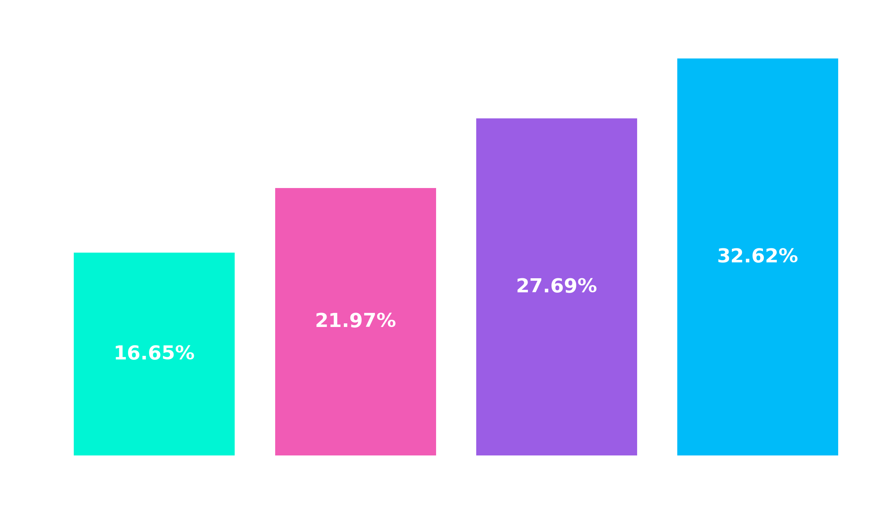

O Problema
Instituições financeiras perdem milhões com default. O desafio foi identificar quais variáveis — demográficas ou comportamentais — realmente antecipam a inadimplência.
A Solução
Processamento de dados do Kaggle com Engenharia de Variáveis para criar métricas de utilização de limite e taxas de pagamento real versus faturado.
Análise de Comportamento
O Ponto de Inflexão: 3 Atrasos
A variável mais crítica identificada foi o histórico de atrasos. A probabilidade de inadimplência sofre um salto estrutural após a terceira fatura em atraso.
- Indicador chave para sistemas de alerta precoce.
- Sugere perda de controle financeiro do cliente.

Utilização do Crédito
Clientes que utilizam acima de 90% do limite possuem uma taxa de inadimplência duas vezes maior que aqueles que consomem até 30%.

Conclusão & Próximos Passos
Foco no Comportamento
Variáveis dinâmicas superam dados estáticos (como idade/sexo) na predição de risco.
Thresholds
Definição de limites de risco automáticos para clientes com 3 ou mais atrasos.
Modelagem
Próxima etapa: Implementação de um modelo de Random Forest para automação da análise.